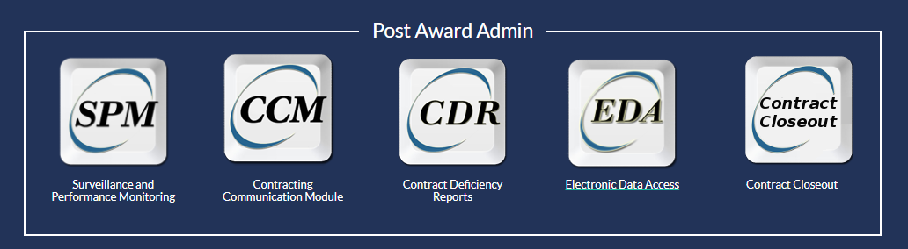
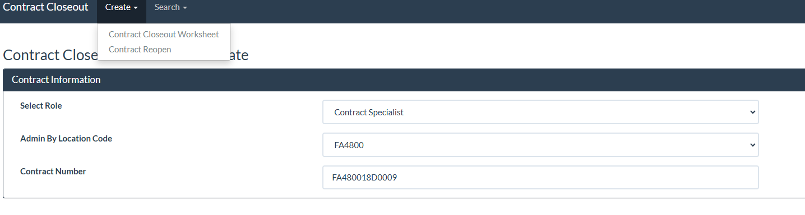
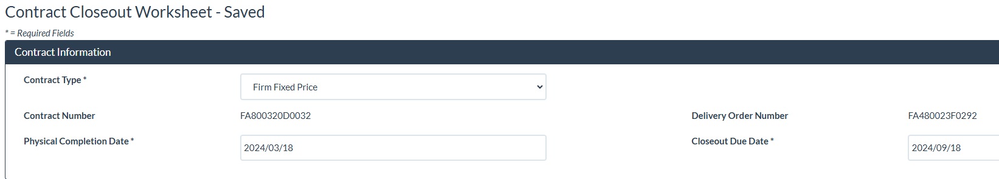
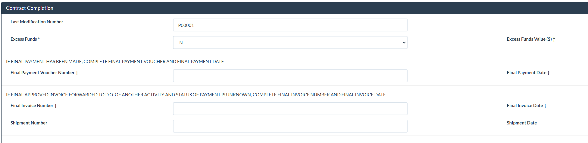
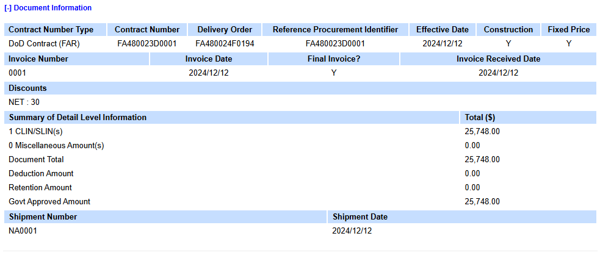
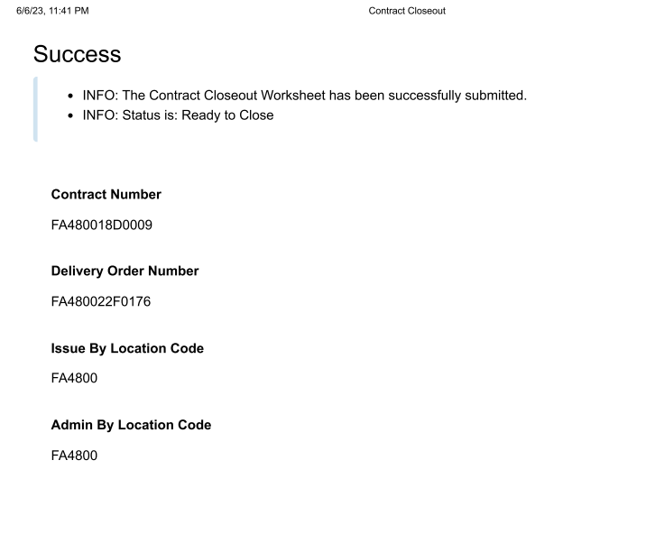
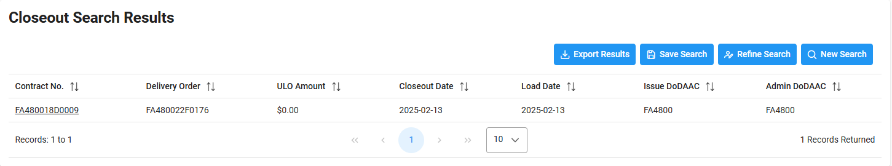
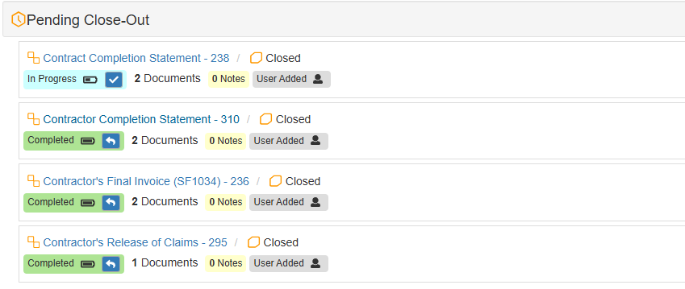

Awarding the contract is the exciting part. Closing it out is how you finish the job. Learn when closeout starts, what you need to do, and how to get it done.
The final step in every contract's life cycle. The contractor delivered, the Government paid, and now you need to button up the file and close it in the system.
Contract closeout is the final administrative action on a contract. It confirms that both sides held up their end of the deal: the contractor delivered everything the contract required (supplies, services, data, certifications), and the Government paid the contractor in full. Any excess funds on the contract get deobligated.
Timely closeout matters because without it, the Government cannot settle its financial records. Unliquidated balances (funds still sitting on a contract after performance ended) can mask improper payments and prevent the Government from reusing unspent money elsewhere.
Closeout begins after physical completion. FAR 4.804-4 defines physical completion as:
For Indefinite Delivery Contracts (IDCs) and Blanket Purchase Agreements (BPAs), the basic ordering instrument can only be closed when the ordering period has expired and every order issued against it has been closed individually.
Before you start doing this manually, check whether your contract qualifies for Automated Contract Closeout (ACCO). As permitted by FAR 4.804-5(a), ACCO lets the system initiate and execute closeout without the contracting officer having to do it. This capability lives in PIEE.
A contract qualifies for ACCO if it meets all of these criteria (DFARS PGI 204.804-3):
If the contract qualifies, a notification goes out to the administering office. If nobody takes action within 120 days, the system closes the contract and generates an electronic Contract Completion notice (EDI 567C) posted to EDA.
If the contract does not qualify for ACCO, you are doing it manually. Here is what needs to happen:
I do not do releases of claims on standard FFP contracts. If I see full payment and that amount matches the total contract value, I close it out. Listen to your leadership on this, but I have had claims submitted in court and had to pay the contractor multiple times even when I had a signed release of claims in the file. There is a time and place for them, but that really should be when there are residual funds left over, or when there is a genuine potential for a contractor to submit a claim. Even then, history has shown me that a release does not always mean much.
So I do not delay closing out a contract because I cannot obtain one. Safe rule: request one, give a suspense. If the contractor does not meet that suspense and you have sufficient evidence of full payment and receipt of goods or services, close it out.
- Nick Hazelett
PIEE's Contract Closeout module is where you generate the electronic DD 1594 (EDI 567C). Here is the general flow:
DD 1594 exists in the file but not in EDA. This means someone completed a manual form and put it in the folder, but the system does not know the contract is closed. You need to initiate closeout in PIEE so the electronic record gets created and posted to EDA.
Cannot find the final invoice. Check WAWF first. If it is not there, try PowerBI or DEAMS. You can also contact DFAS directly for a payment log. For Air Force contracts paying through F87700, call 800-756-4571 (option 4) or email the DFAS Limestone customer inquiries box.
Excess funds on the contract. If money is left over after the contractor has been paid in full and no more invoices are expected, those funds need to be deobligated. You can do this through a contract modification or report the correct unliquidated amount on the EDI 567C/DD 1594.
Missing release of claims. For T&M/LH contracts under 52.212-4 Alternate I, the release is a condition of final payment. For other contract types, check your specific clauses. For a standard FFP commercial contract, it may not be contractually required. Request one, give a suspense, but do not let it hold up closeout indefinitely if you have sufficient evidence of full payment and delivery (see the tip below).
Options still on the contract. You cannot close a contract while option periods are still active. All options must have expired or been exercised and completed before closeout can begin.
Content adapted from training materials developed by Sra Dariia Khymchenko. Thank you for your contribution to the contracting workforce.
This walkthrough follows the manual closeout process in PIEE and EDA, step by step. Screenshots are from an actual closeout workflow. Click any image to enlarge it.
Log into PIEE and navigate to Post Award Administration. You will see modules for SPM, CCM, CDR, EDA, and Contract Closeout. Select Contract Closeout to begin.

Click Create and select the closeout worksheet option. Enter the contract number and the system will pull in the contract information. If an existing worksheet is found, PIEE will let you know.

Once the worksheet is saved, review the pre-populated fields: contract type, contract number, physical completion date, and closeout due date. Verify these are correct before moving forward.

Fill in the Contract Completion section. This includes the last modification number, excess funds (if any), whether a final payment voucher exists, and the final invoice information. Pull the invoice and voucher numbers from WAWF.

Cross-reference the invoice in WAWF to confirm the amounts match. Look at the Document Information screen to verify the invoice number, amounts, and payment status. This is how you confirm full payment was made.

After completing all fields, submit the closeout worksheet. If everything checks out, you will see a success message confirming the worksheet has been submitted and the contract status is Ready to Close.

Go to EDA and search for your contract. The closeout search results should show the contract with a closed status and a closeout date. This confirms the EDI 567C has been posted. Download the document for your records.

Back in your contract management system, update the Pending Close-Out checklist. Mark the Completion Statement, Final Invoice, and Release of Claims tabs as applicable. Upload the DD 1594 or EDI 567C you downloaded from EDA.

Once the EDI 567C is signed in PIEE, the electronic DD 1594 (Contract Completion Statement) is generated. It contains the contract number, contractor information, completion and payment dates, and the contracting officer's signature. Download this from EDA and upload it to your contract file. This document is the official record that the contract is closed.
If the contract requires a release of claims (T&M/LH under 52.212-4 Alternate I, or more complex contract types), the contractor signs a statement discharging the Government from all liabilities, obligations, and claims under the contract. Check WAWF attachments for it. For straightforward FFP commercial contracts, a release of claims may not be contractually required. Request one, give a suspense, but do not hold up closeout if the contractor does not respond and you have evidence of full payment and delivery.
Screenshots adapted from training materials developed by Sra Dariia Khymchenko.
The governing regulation for contract closeout procedures. Covers time standards (4.804-1), completion requirements (4.804-4), and procedures for closing out contract files.
Open FAR Subpart 4.8Details the specific steps for closeout, including automated closeout authority and what documentation is required for the contract file.
Open FAR 4.804-5Retention requirements. Contract files must be retained for six years after final payment. Know what to keep and for how long.
Open FAR 4.805DoD-specific guidance including Automated Contract Closeout (ACCO) criteria, PIEE procedures, and the EDI 567C process.
Open DFARS PGI 204.804The Procurement Integrated Enterprise Environment. Use the Contract Closeout module and EDA to generate and track your EDI 567C.
Open PIEEThe form used to document contract completion. In most cases you will generate the electronic equivalent (EDI 567C) through PIEE rather than filling out the paper form.
DD Forms 1500-1999